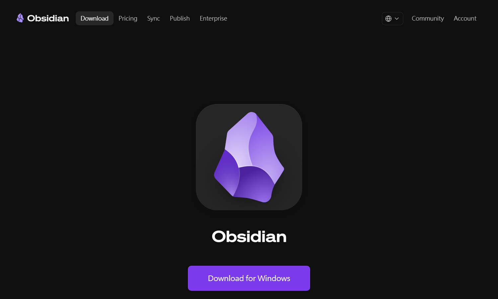
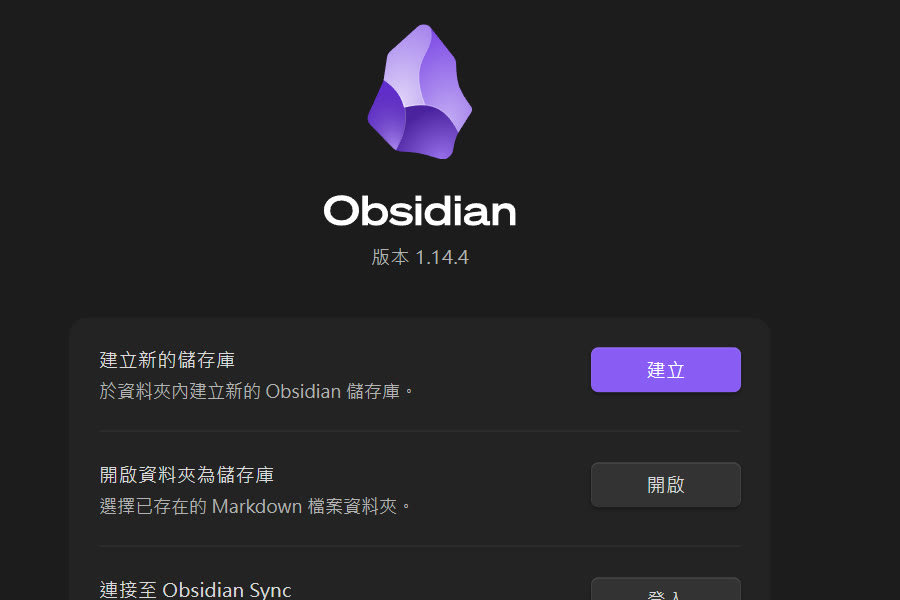
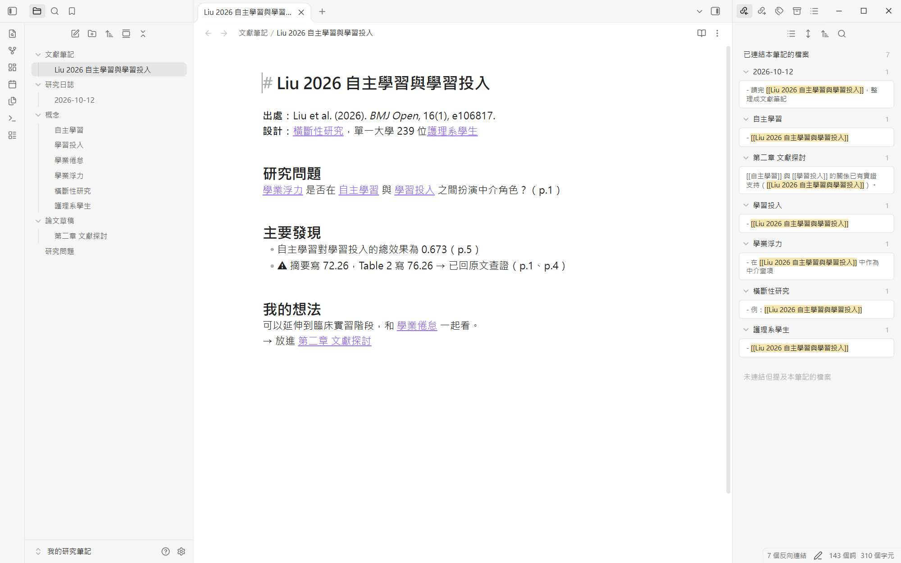
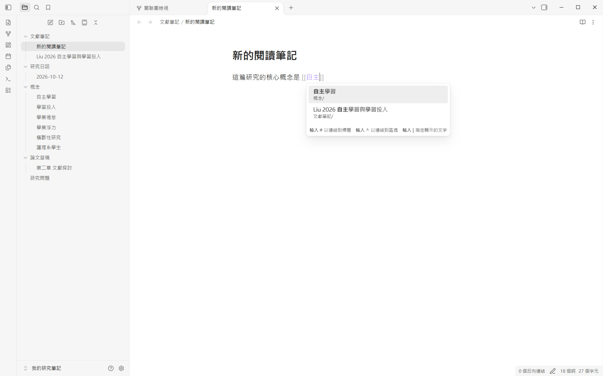
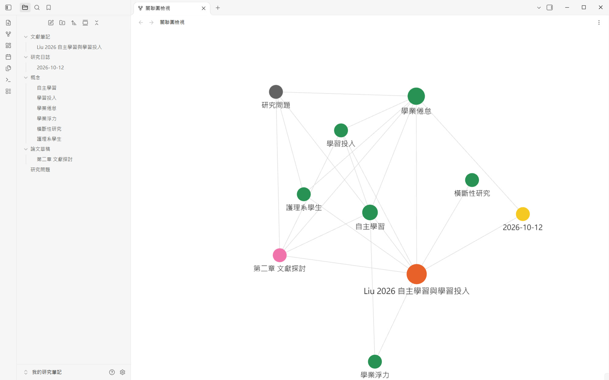

下載、建立儲存庫、寫第一則文獻筆記，再用連結把概念串成一張網
電腦、手機都能用，基本功能完全免費。
每則筆記都是一般文字檔（.md），不怕平台倒掉或被鎖住。
用 [[ ]] 連結概念，反向連結和關聯圖幫你看見文獻之間的關係。


儲存庫（vault）就是一個放筆記的資料夾。
例如「我的研究筆記」，放在文件或雲端硬碟資料夾。

資料夾和每一則筆記
像打 Word 一樣寫
哪些筆記連到這一篇
「作者 年份 主題」，例如 Liu 2026 自主學習與學習投入，之後搜尋、連結都好找。
寫論文引用前，幾秒就能翻回原文確認。

輸入「自主」，它就跳出建議
[[自主學習]] 變成可以點的連結
點下去就建立新筆記，先連再寫

打開「自主學習」，所有提到它的文獻都列在右邊；寫論文時一次找回
● 文獻筆記 ● 概念
● 論文草稿 ● 研究日誌
[[ ]] 會直接變成連結，接上你既有的概念筆記。
補上「我的想法」，重要數字回原文核對。
標題寫作者、年份和主題
不要整段複製；重點都標頁碼
用 [[ ]] 把概念串起來，寫論文時一次找回
obsidian.md
讀文獻、寫作
寫分析程式
管理文獻
專案與進度
研究筆記網
✓ 今天
影片與簡報都放在網站：bobyu89.github.io/phd-forward